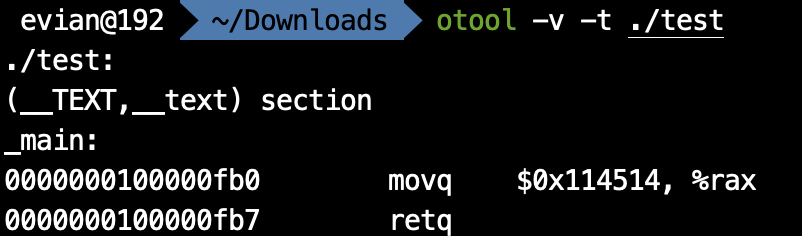
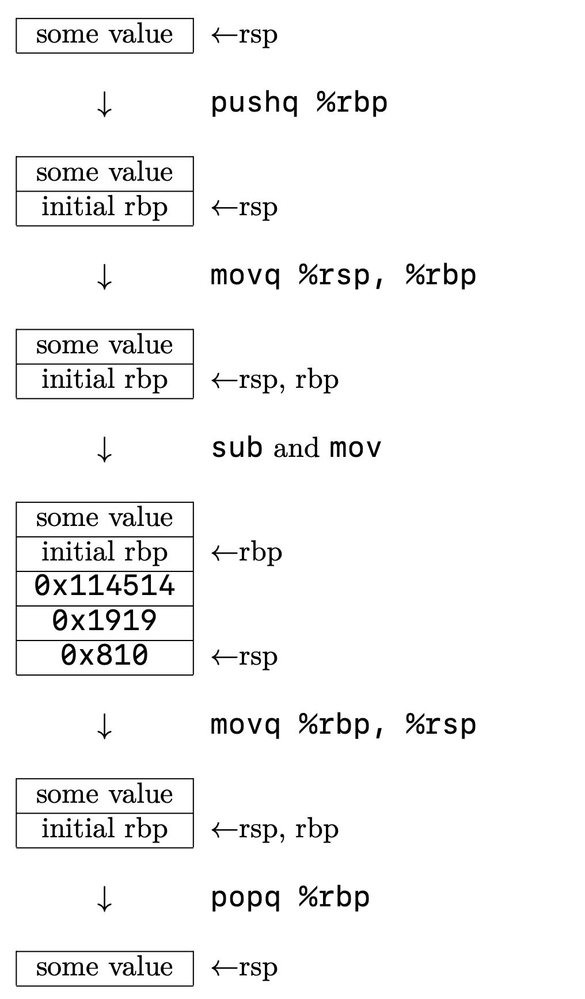

naive blog
macOS上的汇编入门（七）——字面量与局部变量
在上一篇文章中，我们分析了第一个汇编程序。
# exit.s
.section __TEXT,__text
.globl _main
_main:
movq $0, %rax
retq
这个汇编程序是我们所有汇编程序的框架，因为它实现了程序进入和程序退出的功能。我们接下来所有的程序都是在这个程序的基础上进行修改。
在这篇文章中，我主要介绍的是汇编语言中变量的使用。在x86-64架构下，寄存器的数量很少。而且，寄存器的作用往往是用于运算而不是用于存储。那么，我们在程序中该如何使用变量呢？
.equ
定义字面量
最简单的定义变量的方式，是利用汇编器指令
.equ
. 这类似于C语言中的
#define
. 比如说，我在程序开头写上
.equ maxCount, 0x114514
那么，我在之后的程序里就可以写
movq $maxCount, %rax
来表示将
0x114514
赋值给rax寄存器。
同时这里应当指出，这个指令是汇编器指令，在汇编的时候，会自动将所有的
maxCount
直接用
0x114514
替代。比如说，我有以下程序：
.text
.globl _main
.equ maxCount, 0x114514
_main:
movq $maxCount, %rax
retq
我们通过汇编、链接以后，得到一个
test
可执行文件。我们可以用之前提到的MachOView软件，或者在终端中键入
otool -v -t ./test
来查看生成的可执行文件中
__TEXT
段
__text
节的内容：

由此可知，最终生成的文件中，是直接替换得到的。
此外，
.equ
还有一个比较方便的地方在于，它可以支持简单的算术运算，如加减乘除等。比如说，我可以写
.equ maxCount, 1919-810
, 那么接下来所有出现
maxCount
的地方，都会用
1109
来替代。
但是，正如C语言中的
#define
定义的宏一样，
.equ
定义的变量只是一个简单的替换，并不支持对这个变量重新赋值之类的操作。这个变量也没有其地址，只是一个字面量。
局部变量
栈
我们知道，在C语言中，局部变量在栈上分配。在汇编语言中也是这样。因此，我们来回忆一下「栈」的概念。
在操作系统基础中，我们谈到，在一个程序运行的时候，系统会自动给这个程序分配一个栈区。这个栈区和数据结构中所说的栈类似，也支持压栈和弹栈的操作。栈区在逻辑地址空间里是一块连续的空间，栈底是固定的，每次压栈，都会使栈顶向逻辑地址减小的方向移动。
在几个寄存器中，有一个寄存器和栈的关系非常大，那就是rsp寄存器。从它的名字就可以看出来，stack pointer, 它存储的值永远是栈顶的地址，所以它又被叫做栈顶指针。我们可以用
(%rsp)
来获取栈顶存储的值，通过
a(%rsp)
, 其中
a
是任何一个整数，来获取地址是rsp存储的值加
a
处的内存单元的值。比如说，
2(%rsp)
就是栈顶上方（逻辑地址增大方向）2个字节处的值，
-2(%rsp)
就是栈顶下方（逻辑地址减小方向）2个字节处的值。关于这个记号，我也会在之后的寻址方式中提到。
在汇编语言中，压栈和弹栈的助记符分别是
push
和
pop
. 这两个操作均有一个操作数。
push
的操作是将栈顶指针向下移动（也就是将rsp内的值减小），并将移动后rsp对应位置内存区域的值赋为其操作数，而pop则相反。这里“向下移动”的距离是根据
push
后面跟着的字母决定的，如
pushq
就是把rsp内的值减8.
此外，如果是想获得栈顶的值，而不弹栈，可以直接用
mov
来实现。如
popq %rax
是将栈顶的8个字节内存储的值赋给rax, 并且栈顶指针向上移动8个字节。而
movq (%rsp), %rax
则是只将栈顶的8个字节内存储的值赋给rax, 不涉及栈顶指针的移动。而如果只想弹栈却不想赋值，那么直接对rsp进行
add
即可。如想把栈顶的8个字节的数据弹栈，就直接
addq $8, %rsp
.
同时，对于
push
而言，如果我们一下子准备把许多值压入栈内，那么可以先用
sub
指令减小rsp, 再用
mov
移动。比如说：
# method 1
pushq $0x114514
pushq $0x1919
pushq $0x810
# method 2
subq $24, %rsp
movq $0x114514, 16(%rsp)
movq $0x1919, 8(%rsp)
movq $0x810, (%rsp)
方法一和方法二的最终效果是一样的。但是，我们建议使用方法二，也就是“先
sub
, 再
mov
”，因为这样更高效。
使用局部变量
讲完了栈的概念，接下来就是如何使用局部变量了。使用局部变量非常简单，就是将局部变量放到栈上，然后使用的时候直接去访问栈上对应的地址空间就行。然后在返回之前，把栈恢复即可。
但是，这里有一个常用的技巧。像上面的例子中写的，我们是通过对rsp中存储的地址加偏移量去访问局部变量，但是，如果我们之后又有了压栈、弹栈的操作，那么，偏移量就会改变。这种不稳定性十分不利于我们编程。因此，我们又用了另一个寄存器rbp来解决这个问题。rbp, 顾名思义，base pointer, 基地址指针，一般是用来使用偏移量寻址的。我们使用的技巧是，先将rbp
push
进栈（之所以保留我会在后面的调用约定里说到），然后利用之前的手法对rsp
sub
. 然后，利用rbp的偏移量来引用局部变量。最后在返回前，将
rbp
赋值给
rsp
, 此时栈顶指针指向的是最初对rbp
push
之后的位置，然后将栈顶
pop
出来给rbp，最后返回。
比如说，我有以下C程序：
int main()
{
int a = 0x114514;
int b = 0x1919;
int c = 0x810;
return 0;
}
那么，它对应的汇编程序如下：
_main:
pushq %rbp
movq %rsp, %rbp
subq $24, %rsp
movq $0x114514, -8(%rbp)
movq $0x1919, -16(%rbp)
movq $0x810, -24(%rbp)
movq $0, %rax
movq %rbp, %rsp
popq %rbp
retq
它对应的栈的变化如图所示：

由此可见，在执行完
popq %rbp
之后，栈又恢复为最初进入时的模样。
我们在使用rbp+偏移量来访问局部变量的时候，有时候会觉得要把变量对应的偏移量记住，这会比较麻烦。我们可以结合上面讲到的
.equ
定义字面量来解决这一问题：
_main:
.equ a, -8
.equ b, -16
.equ c, -24
pushq %rbp
movq %rsp, %rbp
subq $24, %rsp
movq $0x114514, a(%rbp)
movq $0x1919, b(%rbp)
movq $0x810, c(%rbp)
movq $0, %rax
movq %rbp, %rsp
popq %rbp
retq
这样，我们只需要之后用
a(%rbp)
就可以指代
a
了。
可以在哪看到这系列文章
我在我的 GitHub 上， 知乎专栏 上和 CSDN 上同步更新。
上一篇文章： macOS上的汇编入门（六）——汇编语言初识
下一篇文章： macOS上的汇编入门（八）——寻址方式与全局变量